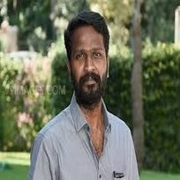

S.S.Rajamouli

Koduri Srisaila Sri Rajamouli, professionally known as S. S. Rajamouli, is an Indian film director, screenwriter, and stunt choreographer known for his works predominantly in the Telugu cinema.He is known for directing high fantasy action films such as Magadheera (2009) featured at the American Fantastic Fest, Eega (2012) winning Most Original Film at the Toronto After Dark Film Festival, Baahubali: The Beginning (2015) nominated for American Saturn Award for Best Fantasy Film, Baahubali 2: The Conclusion (2017) winning the American Saturn Award for Best International Film, and the Australian Telstra People's Choice Award.
Vetrimaaran

Vetri Maaran is an Indian film director, screenwriter and film producer, who works in the Tamil film industry. As of 2016, he has won four National Film Awards and two Filmfare Award South.Vetri Maaran made his directorial debut with the critically acclaimed Polladhavan (2007). His second feature film Aadukalam (2011) won six National Film Awards. He produces films under his production company, Grass Root Film Company. His movie Visaaranai (2016) was selected as India's official entry to Academy Awards.In September 27, 2020, Vetrimaaran was honored by a Special Award "Thirai Asuran"[19] by Ambedkar Makkal Iyakkam[20] in a virtual conference appreciating his effort talking about long time issue Panchami Land in his last movie Asuran.